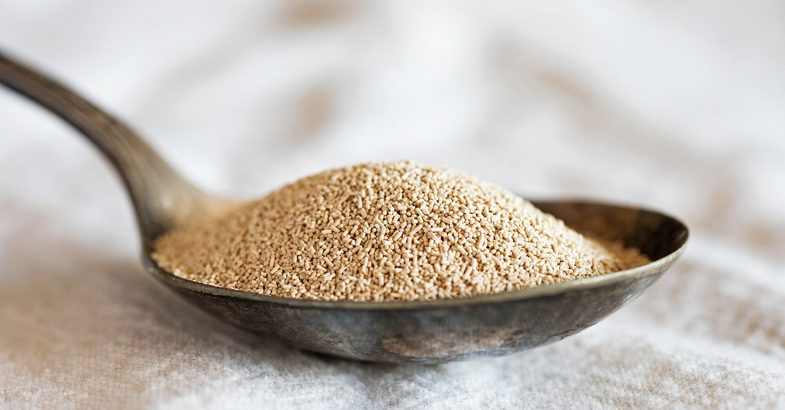
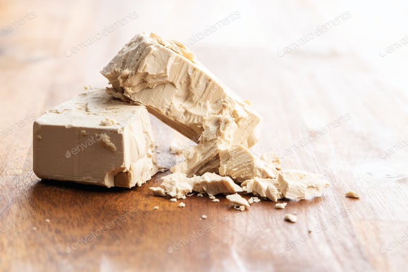
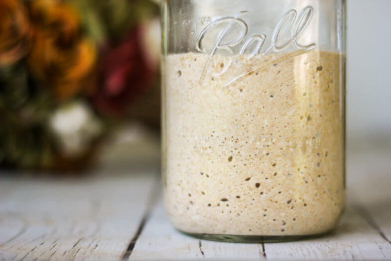
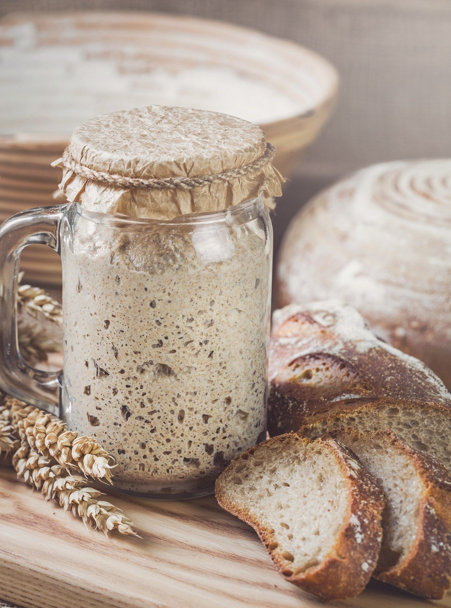

What Causes Dough to Rise?
The most often purchased breads are usually some form of white or wheat loafs. These are breads that are baked using white, or grain flours which use some form of commercial yeast as a leavener. A leavener is the yeast culture that causes the bread to rise. The rising process is a result of the yeast culture consuming starch molcules that are formed from the mixing of water and flour. When yeast consumes these molecules, a bypdrouct is released in the form of carbon dioxide and ethyl alcohol. These products are released as bubbles and cause the dough to "rise" assuming there is an existing gluten network to contain the bubbles.
Fermentation
As stated previously, yeast produces sugars and alcohols in the process of breaking down the existing enzymes in the dough. The longer that yeast is allowed to leaven the dough, the stronger the overall acidity of the dough. A lower PH level results in a more complex and sour flavor, due to rising CO2 levels and the increase of other acids in the dough, namely acetic and lactic acids. At a certain point, the yeast will run out of enzymes to consume and will more or less "die" of starvation. This is the end of fermentation in the dough and it is not advisable to allow the dough to reach this stage.
Yeast Types
-

Active Dry Yeast
This yeast is dehydrated to force the organisms into a dormant state. They are then ground into granules for later usage. Sold in packets and jars. Best used for doughs that require a longer fermentation.
Learn More -

Fresh Yeast
This yeast is usually sold in refrigerated blocks, not dehydrated. Since this yeast is still alive, it does not require a blooming prior to usage. Shelf life of this yeast is much shorter than dried yeast. Best used in sweeter doughs.
Learn More -

Wild Yeast
Wild yeast is, well, wild. It must be caught quote literally from the air and grown as a culture in order to use in baking. There are many types of wild yeast and every environment has its own strain and therefore allows for a different flavor bread depending on which strain of yeast is caught and cultivated.
Learn More
Wild Yeast Cultures: Exposed!
Yeast travels through the air, usually in the presence of other micro-orgranisms. It would be quite difficult to go anywhere in the world that didn't have some form of yeast floating around in the environment. Wild yeast cultures are everpresent on grains, water, and air. The method of using yeast in bread builds on the process of using high concentrations of yeast to feed on an existing food supply (the enzymes formed by mixing flour and water) and cause rising in the dough. Wild yeast has a slower rate of fermentation and allows for a greater amount of acids to be produced before the food supply runs out. This slowed rate of fermentation increases the dough's sourness and makes it hardier towards molding. In general the main advantage of wild yeast over commercial yeast is the complex flavor it will produce. An older wild yeast culture will continuously change in flavor and create an evolving dough flavor the longer this process occurs.
Sourdough Starter: A Starting Recipe
Growing a wild yeast culture is not something that happens overnight. The culture is like a child; you must feed it and take care of it often when it is young to allow it to become more self-sufficient later in its life. This beginning part can take between a few days and a few months depending on environmental conditions.
- Combine your flour (preferable a whole wheat flour) with water at a 1:1 ratio in grams. Use a glass container with enough space for the mixture to double in size.
- Allow this mixture to sit in a warm environment, loosely covered, for 24 hours.
- As the culture is just beginning to grow, there may be little bubbling activity within the first 24 hour period. Regardless, discard half of the mix and add back another 1:1 ratio of flour and water equaling the amount you initially create the mix from.
- Repeat the steps as needed for 2 more days.
- After a few days the yeast should be significnatly more active. There should be a strong smell of alcohol at this stage. Begin feeding and discarding the culture every 12 hours. Yes, this is a time-consuming process but is well worth it in the end.
- The culture is ready for usage once it is doubling in volume within 12 hours of a feeding. There should be many bubbles on the surface now and the culture should have a tangy aroma, but not excessively sour.
- Feed the starter one last time and allow it to double once more. Remove however much starter is needed for the recipe in mind.
- Move the remaining unused starter to another glass jar and feed it. Allow the culture to grow for a few hours then cover loosely and refrigerate. Remove from refrigerator once a week and feed accordingly.
A Beginner's Sourdough
So now you have a strong sourdough starter. You can use it in place of commercial yeast in most recipes by taking the total mass of the finished dough and converting 1/6th of that total into sourdough starter. If the dough totals 1000 grams you would use 166.67 grams of starter in place of bloomed commercial yeast. Sourdoughs usually have a higher hydration ratio which results in a more open crumb and lighter texture. This makes the dough more difficult to work with, as it is significnatly more sticky but the result is an unbeatable texture and flavor. True mastery of sourdough requires minimal kneading to prevent excessive gluten matrix formation.
- Combine 482g water and 113g fed starter. Mix well.
- Add 113g wheat flour, 567g unbleached all-purpose flour, and 2.5 tsp fine salt.
- Combine until a shaggy mixture forms. Do not overmix.
- Cover with plastic and bulk ferment for at least 30 mins.
- Knead dough and place in newly oiled bowl. Rise for 1-1.5 hours
- Punch down dough and fold. Rise for an additional hour.
- Fold once more and rest 90 minutes. If dough is still stiff, repeat fold once more.
- Divide dough into 8oz pieces, round into boules, and cover tightly in oiled container.
- Cold rise the dough for up to 1 week.
- When ready to bake, remove dough from fridge and rest for 20 minutes. Then cup hands and shape into boule.
- Proof dough for 12-24 hours, then use a lame to score a pattern. Bake at 450F in dutch oven or on parchment paper lined steel tray.
- If there is time, fill a pan with boiling water and place on bottom shelf of oven to simulate a steam-injected oven
- Bake 30 mins-50 mins until loaf is a deep brown but not burned.
- Remove from oven and let cool a minimum of 1 hour. Serve.
Sourdough is best enjoyed by itself to experience the flavors you worked so hard to develop.